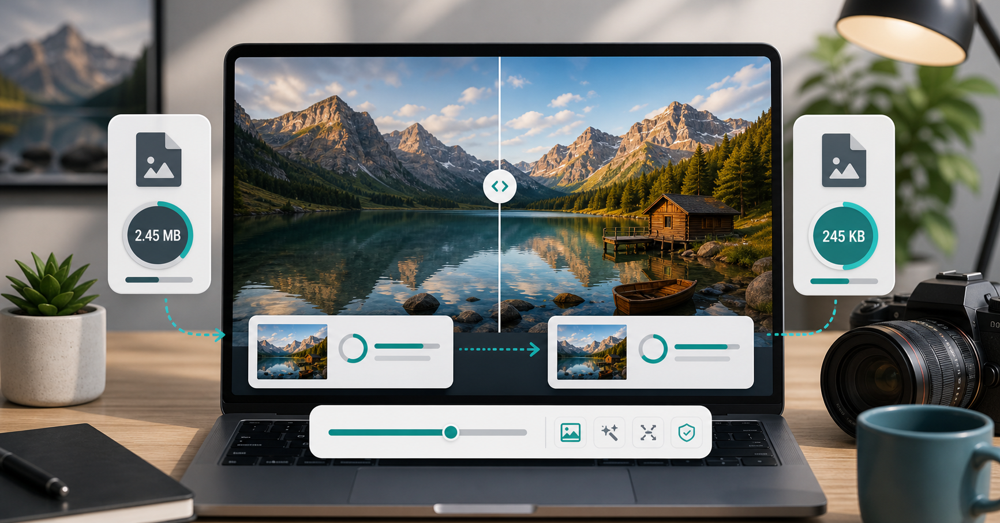

JPG guide
How to compress JPG images without losing quality.

"Without losing quality" is one of the most common phrases people search when they need to compress a JPG. The honest answer is that JPG compression is usually lossy, which means some data is removed. The useful question is different: how do you make the file much smaller while keeping the visible quality high enough that people cannot tell the difference?
Start with the image itself. JPG works best for photographs, natural scenes, portraits, food images, travel shots, and product photos with lots of color variation. It is not the best choice for sharp screenshots, flat icons, diagrams, or text-heavy images. If your image contains small text or hard edges, test PNG or WebP as well.
The biggest mistake is compressing a huge JPG at a very low quality while leaving the dimensions untouched. A 5000 pixel wide photo exported at 40 percent quality can still be too large and may look rough. Instead, reduce the width first. For a standard blog or business website, 1600 pixels wide is often enough. For thumbnails, cards, and profile images, you can go much smaller.
After resizing, choose a quality setting. For most JPG photos, 75 percent is a safe first test. If the image is detailed, has faces, or will sit near the top of a page, try 78 to 82 percent. If it is a background, small gallery image, or upload-form photo, 65 to 72 percent may be perfectly fine. The best setting depends on the content, not only the file size target.
Pay attention to problem areas. Blue skies, shadows, skin, and soft gradients can show compression artifacts earlier than busy backgrounds. Text on signs, labels, and product packaging can also suffer. After compressing, open the image at normal viewing size, then check these areas. If you see blocky patches or strange color bands, raise the quality a little.
Metadata can also add unnecessary weight. Many camera images include location data, camera details, and editing history. For website use, this metadata is rarely needed. Browser-based compression usually strips much of it as part of the export, helping reduce size further.
Another useful habit is to avoid editing the compressed version later. If you need to crop, brighten, add text, or change colors, go back to the original image, make the edit, and export again. Editing an already-compressed JPG and saving it again can stack compression damage. That is why designers and photographers usually keep a master file separate from the final web version.
If you are preparing JPGs for an online shop, test a few image types before processing everything. A white-background product photo may compress differently from a lifestyle photo with plants, fabric, or shadows. Jewelry, electronics, and clothing can reveal compression problems in different places. Once you find settings that work for your product style, batch processing becomes much easier.
For social media, the platform may recompress your upload after you post it. That does not mean you should upload a massive original. A clean, moderately compressed JPG at the right dimensions often survives platform compression better than a huge file that gets heavily processed later. Start with a sharp image, avoid extreme compression, and keep important details away from tiny text where possible.
A good JPG compression workflow is simple: resize to the real display size, compress at 70 to 80 percent quality, compare the result, and only push lower when there is a hard upload limit. Keep the original image saved somewhere. Once a JPG is heavily compressed, re-compressing it repeatedly can make quality worse.
CompressPixel is designed for that workflow. Use the compress JPG online page or the main compressor, set the width, start with the recommended quality, and download the smaller file. If you are trying to meet a strict form limit, our guide to compressing images under 100KB may be more useful. The goal is not to chase the smallest possible number every time. The goal is a file that loads quickly, uploads successfully, and still looks like something you would be happy to publish.
Sources and further reading
- Google Image SEO best practices recommends using helpful surrounding text, filenames, and alt text for image understanding.
- Google Search Console Core Web Vitals report is useful for checking whether real visitors are seeing speed issues.